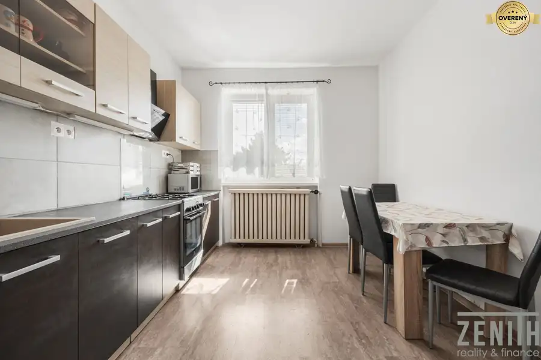
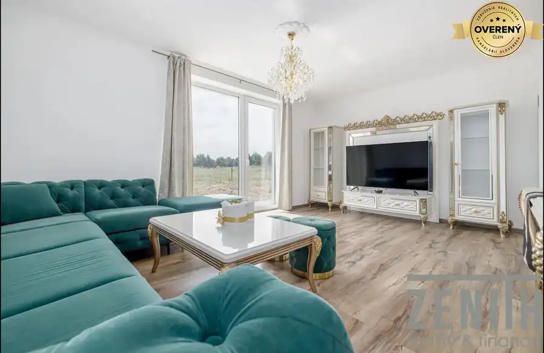
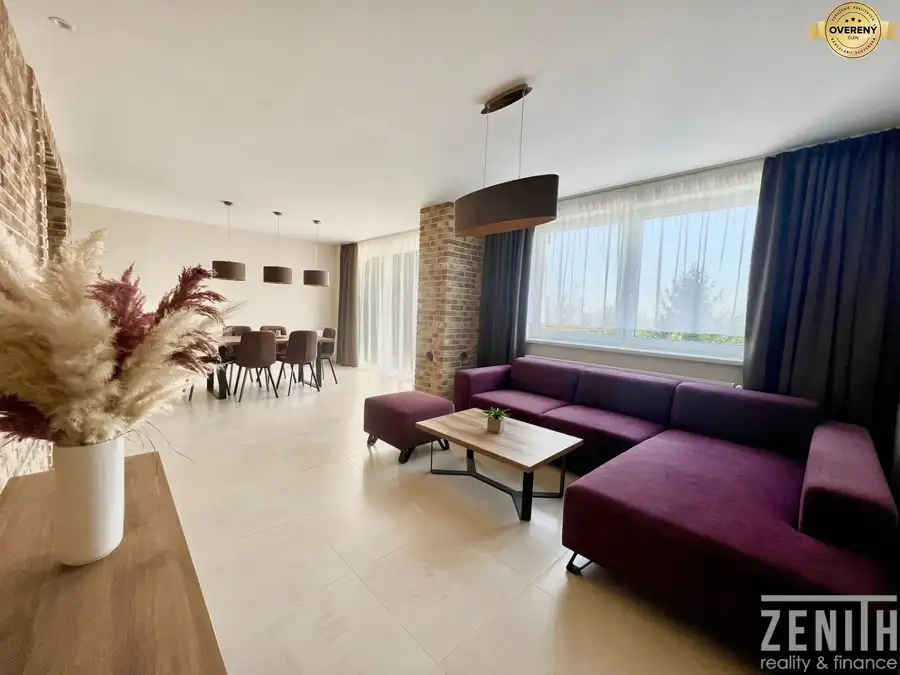

PREDAJ 3 izbový priestranný, slnečný, dvojpodlažný byt Vajnorská ulica
Nové Mesto, Bratislava
- Dispozícia3-izbový
- Plocha84.42 m²
- Poschodie6. z 6
- Vlastníctvoosobné
O nehnuteľnosti
Zenith reality Vám exkluzívne ponúka na predaj
slnečný dvojpodlažný byt s veľkou terasou vo vyhľadávanej lokalite na Vajnorskej ulici v Bratislave. Byt bol postavený v roku 2012 ako nadstavba 6 poschodového bytového domu s výťahom.
Byt je priestranný svetlý a s krásnym výhľadom na Kuchajdu.
Dispozícia bytu pozostáva:
1. poschodie 64,2m2
- vstupná chodba
- kúpeľňa spojená s toaletou
- priestranná slnečná obývačka spojená s kuchyňou z ktorej sa vychádza na balkón
- hosťovská izba
2. poschodie 20,21m2
- priestranná spálňa s vyýstupom na príjemnú terasu o rozlohe 40m2
- šatník
Byt sa predáva čiastočne zariadený, kuchyňa vybavená elektro spotrebičmi (elektrická rúra, mikrovlnná rúra, digestor, umývačka riadu, chladnička s mrazničkou) a plynovým sporákom. Byt má vlastný plynový kotol, čo zabezpečuje reguláciu spotreby a teda predstavuje úsporu.
Bytový dom má vlastné detské ihrisko a parkovanie priamo za domom.
Lokalita ponúka kompletnú občiansku vybavenosť a je len na skok do centra mesta.
Priamo pred domom sa nachádza obchodné centrum VIVO, jazero Kuchajda, ktoré ponúka množstvo športových aktivít a priestor pre relax.
Neďaleko sa nachádza Klientské centrum Tomášiková, Fresh market – trhovisko s čerstvou zeleninou a street foodom, Yeme- kvalitné potraviny.
Výborná dostupnosť MHD.
Cena za uvedený byt je na vyžiadanie.-€. Uvedená cena je kompletná, v ktorej je zahrnutá odmena pre sprostredkovateľa za kompletný právny servis vrátane poplatkov pri samotnom prevode nehnuteľnosti, poprípade s riešením hypotéky Vám radi pomôžeme rýchlo a bez starostí.
Zodpovedný maklér: Petra Kiss
kontakt : , email:
Text a fotodokumentácia sú majetkom a autorským dielom spoločnosti Zenith-Reality s.r.o. © Copyright
Parametre
| Celková rozloha | 129.82 m² |
|---|---|
| Úžitková plocha | 84.42 m² |
| Poschodie | 6 |
| Počet poschodí | 6 |
| Počet izieb | 3 |
| Vlastníctvo | osobné |
| Plyn | áno |
| Kúpeľňa | vaňa a sprchovací kút |
| Vykurovanie | vlastné |
| Balkón | áno - 1 |
| Terasa | áno |
| Pivnica | nie |
| Výťah | áno |
| Parkovanie | vonkajšie |
| Zariadenie | čiastočne |
| Zateplený objekt | áno |
| Klimatizácia | áno |
| Okná | plastové |
| Orientácia | juhovýchodná |
| Novostavba | áno |
| Dátum zverejnenia | 3. 11. 2022 |
Kde to je
Mohlo by Vás zaujímať

Rodinné domy7 219 900 €Predaj 5-izbový rodinný dom 180 m² | garáž | pozemok 571m² Vrakúň Vrakúň 5-izbový180 m² Rodinný dom bol postavený v roku 1986 a ponúka až 180 m² úžitkovej plochy na pozemku s výmerou 571 m². Vďaka piatim izbám, dvom kúpeľniam, garáži,…
Rodinné domy10 325 000 €PREDAJ moderný 4 izbový rodinný dom v obci Hrubá Borša Hrubá Borša 4-izbový101.4 m² Štýlová 5 ročná novostavba pri golfovom areáli na pozemku 445m2 , úžitková plocha 101,40m2 , zastavaná plocha 120m2. Dom sa predáva zariadený.…
Rodinné domy10 850 000 €PREDAJ kompletne zrekonštruovaného rodinného domu na Starých Gruntoch Karlova Ves, Bratislava 7-izbový312 m² Táto nehnuteľnosť prešla kompletnou rekonštrukciou od podlahy po strechu. Úžitková plocha je 312m2 na 4 podlažiach, zastavaná 131m2, pozemok 270m2.…